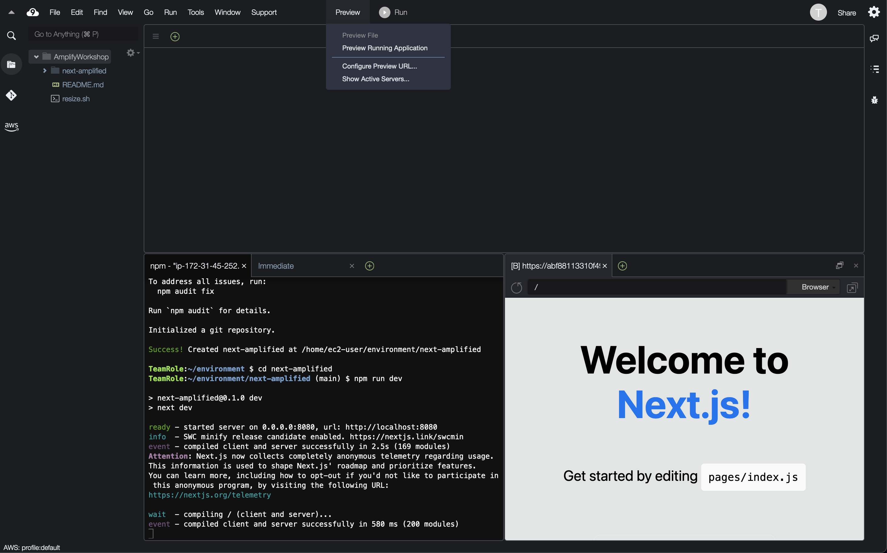

To set up the project, we’ll first create a new Next.js app with Create Next App, a simple CLI tool that enables you to quickly start building a new Next.js application, with everything set up for you. We’ll then add Amplify and initialize a new project.
From your projects directory, run the following commands:
npx create-next-app next-amplified
The CLI tool may prompt you that you need to install the create-next-app package when you run the previous command. Select y and press enter to continue.
This creates a new Next.js app in a directory called next-amplified. Let’s switch into that new directory.
cd next-amplified
Now that we’re in the root of the project, we need to update the versions of some of libraries that were just installed.
npm install next@11.1.4 react@17.0.2 react-dom@17.0.2 eslint@7.23.0 eslint-config-next@11.1.4
We can now run the app by using the following command:
npm run dev
This runs a development server and allows us to see the output generated by the build, you can see the running app by navigating to http://localhost:8080, but since we’re running this in the Cloud9 environment on an EC2 instance, we’ll use the Preview Running Application feature of Cloud9 to display the app inside the IDE.

Now that we have a running Next.js app, it’s time to set up Amplify so that we can create the necessary backend services needed to support the app.
From the root of the project, run:
amplify init
We’ll need to update some of the default values, so when the CLI displays the message Initialize the project with the above configuration?, respond with No and verify your setup with the following configuration.
Enter a name for the project (nextamplified)
# All AWS services you provision for your app are grouped into an "environment"
# A common naming convention is dev, staging, and production
Enter a name for the environment (dev)
# Sometimes the CLI will prompt you to edit a file, it will use this editor to open those files.
Choose your default editor Vim (via Terminal, macOS only)
# Amplify supports JavaScript (Web & React Native), iOS, and Android apps
Choose the type of app that you're building (javascript)
What JavaScript framework are you using (react)
Source directory path (src)
Distribution directory path (.next)
Build command (npm run-script build)
Start command (npm run-script start)
# This is the profile you created with the `amplify configure` command in the introduction step.
Do you want to use an AWS profile?
Where possible the CLI will infer the proper configuration based on the type of project Amplify is being initialized in. In this case it knew we are using Create Next App and provided a default configuration for the type of app, framework, source, distribution, build, and start options.
When you initialize a new Amplify project, a few things happen:
amplify that stores your backend definition. During the tutorial you’ll add capabilities such as a GraphQL API and authentication. As you add features, the amplify folder will grow with infrastructure-as-code templates that define your backend stack. Infrastructure-as-code is a best practice way to create a replicable backend stack.aws-exports.js in the src directory that holds all the configuration for the services you create with Amplify. This is how the Amplify client is able to get the necessary information about your backend services..gitignore file, adding some generated files to the ignore listamplify console. The Console provides a list of backend environments, deep links to provisioned resources per Amplify category, status of recent deployments, and instructions on how to promote, clone, pull, and delete backend resourcesAs you add or remove categories and make updates to your backend configuration using the Amplify CLI, the configuration in aws-exports.js will update automatically.
The first step to using Amplify in the client is to install the necessary dependencies:
npm install aws-amplify @aws-amplify/ui-react